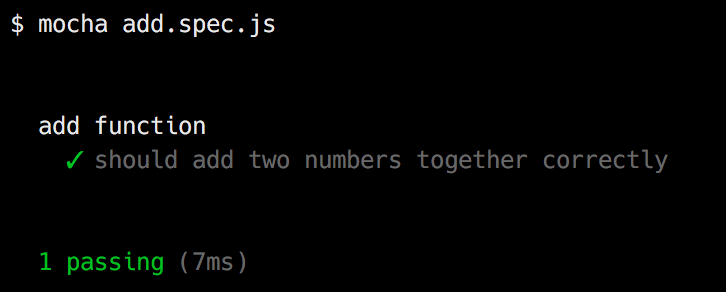
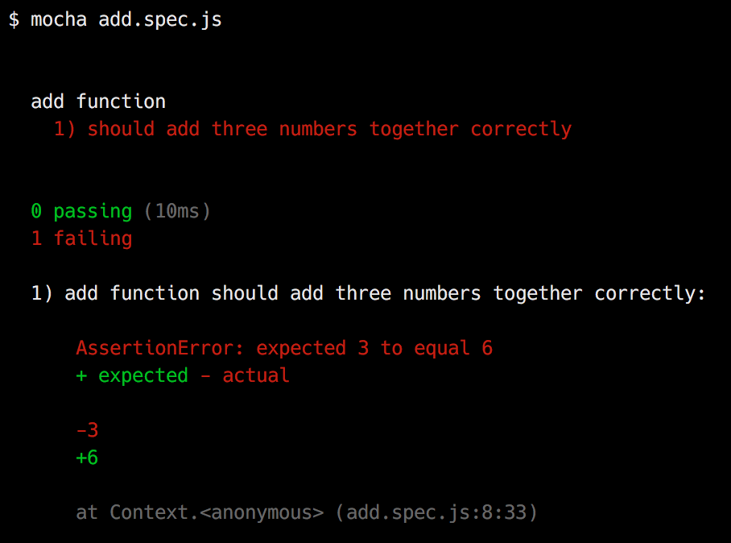
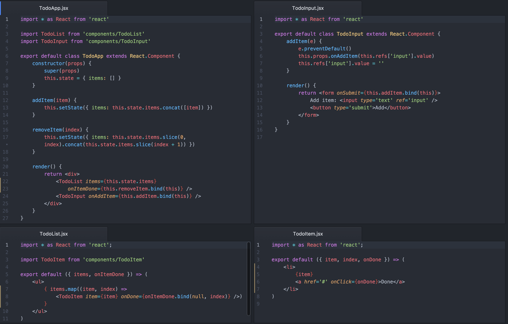
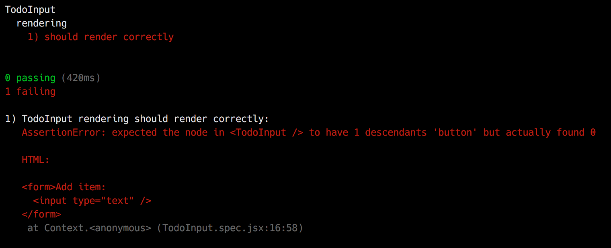
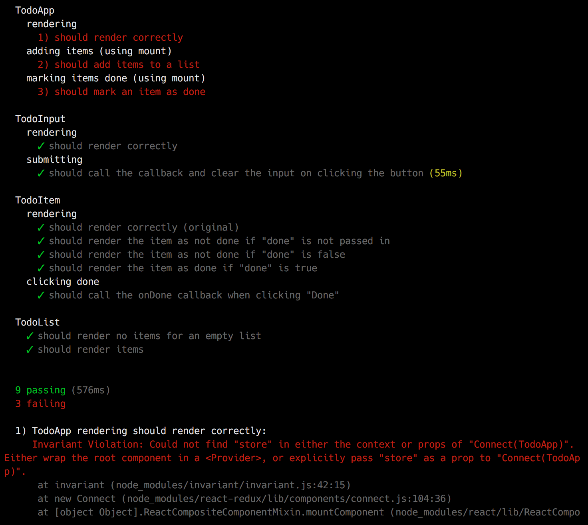

class: center, middle # Unit Testing React Applications ### with `Mocha`, `Chai` and `Enzyme` <br> <center><small>Tom Duncalf | <a href='mailto:tom@tomduncalf.com'>tom@tomduncalf.com</a> | <a href='https://twitter.com/tomduncalf'>@tomduncalf</a></small></center> --- ### Overview * Why unit test? * `mocha` and `chai` for testing Javascript * Unit testing React components * Shallow rendering and testing with `enzyme` * Testing strategies for an app * Tips for real world usage --- ### Why unit test? -- * Check our code behaves as we expect it to -- * Check our code handles edge cases/errors correctly -- * Check our code is syntactically correct (especially in a dynamic language) -- * Reduce dependency on end-to-end tests - faster, pinpoint failure better -- * Tests act as "executable documentation" for our code -- * Enables refactoring with confidence -- * Helps writing code where inputs and outputs are known but method isn't -- * Can help us write better code ??? Dev's opinions on unit testing run from "won't write anything without a unit test" to "won't write a unit test for anything" Does represent extra effort so why should we do it? Document e.g. that a certain edge case handling is correct --- ### Testing Javascript: `mocha` -- * Lots of libraries and tools to choose from: `mocha`, `karma`, `jasmine`, `qunit`, `jsunit`, `wallaby`, `chutzpah`, `ava`, `tape`, `chai`, `sinon`, `jest`... -- * We will use `mocha` as the core test framework and test runner --- ### Testing Javascript: `mocha` ``` // add.js module.exports = (a, b) => a + b ``` ``` // add.spec.js const add = require('./add') describe('add function', () => { it('should add two numbers together correctly', () => { if (add(1, 2) !== 3) { throw new Error('1 + 2 did not equal 3') } // or... const assert = require('assert') assert(add(1, 2) === 3, '1 + 2 did not equal 3') }) }) ```  --- ### Testing Javascript: `mocha` ``` describe('add function', () => { it('should add two numbers together correctly', () => { assert(add(1, 2) === 3, '1 + 2 did not equal 3') }) it('should add three numbers together correctly', () => { assert(add(1, 2, 3) === 6, '1 + 2 + 3 did not equal 6') }) }) ``` <img src="images/add-failure-output.png" width="70%" /> --- ### Testing Javascript: `chai` -- * `chai` is an assertion library, which allows us to write our assertions in three ways: ``` const add = require('./add') const chai = require('chai') chai.should() const expect = chai.expect const assert = chai.assert describe('add function', () => { it('should add two numbers together correctly', () => { // BDD "should" style add(1, 2).should.equal(3) // BDD "expect" style expect(add(1, 2)).to.equal(3) // TDD "assert" style assert.equal(add(1, 2), 3) }) }) ``` -- * We will use BDD `expect` style, supports lots of assertions (and is extendable): ``` expect(result).to.be.a('string') expect(result).to.have.length(3) expect(result).to.deep.equal({ name: 'Tom' }) expect(result).to.have.property('addresses').with.length(3) ``` --- ### Testing Javascript: `chai` * Error output is more useful with `chai`: ``` it('should add three numbers together correctly', () => { expect(add(1, 2, 3)).to.equal(6) }) ```  --- ### Unit testing React apps * What might we want to test in a React app? -- * Test components render as expected -- * ...with different props/state -- * Test components can be interacted with as expected -- * Test component logic -- * Test component integration -- * Test user journeys -- * Test other application logic e.g. Redux actions --- ### Basic approach * Simple `Hello World` component, tested with `react-addons-test-utils` ``` // HelloWorld.js import React from 'react' export default () => <div>Hello world</div> ``` -- ``` // HelloWorld.spec.js import { expect } from 'chai' import React from 'react' import { createRenderer } from 'react-addons-test-utils' import HelloWorld from './HelloWorld' describe('HelloWorld component', () => { it('should render correctly', () => { const renderer = createRenderer() renderer.render(<HelloWorld />) const actual = renderer.getRenderOutput() // returns: { type: 'div', props: { children: 'Hello world' }, ...} expect(actual.type).to.equal('div') expect(actual.props).to.deep.equal({ children: 'Hello world' }) // In reality we might use e.g. scryRenderedDOMComponentsWithTag }) }) ``` ??? Quite painful to write/read Object diffs quite hard to read --- ### Improvement: `jsx-chai` * https://github.com/bkonkle/jsx-chai, based on [expect-jsx](https://blog.algolia.com/how-we-unit-test-react-components-using-expect-jsx/) ``` // HelloWorld.js import React from 'react' export default () => <div>Hello world</div> ``` ``` import chai, { expect } from 'chai' import jsxChai from 'jsx-chai' chai.use(jsxChai) import React from 'react' import { createRenderer } from 'react-addons-test-utils' import HelloWorld from './HelloWorld' describe('HelloWorld component', () => { it('should render correctly', () => { const renderer = createRenderer() renderer.render(<HelloWorld />) const actual = renderer.getRenderOutput() * expect(actual).to.deep.equal(<div>Hello world</div>) }) }) ``` ??? Easier to write/read Better diffs Quite brittle --- ### `enzyme` * Open source library from Github: https://github.com/airbnb/enzyme * Provides an API for working with React component output in tests * Supports shallow rendering, manipulating `props` and `state`, etc. * Mimicks jQuery's API for DOM manipulation and traversal * Works with all major test runners and assertion libraries --- ### `enzyme` * We can use the `shallow` function to return a `ReactWrapper`, which provides an API for working with and making assertions about the component's output ``` // HelloWorld.js import React from 'react' export default () => <div>Hello world</div> ``` ``` import { expect } from 'chai' import { shallow } from 'enzyme' import React from 'react' import HelloWorld from './HelloWorld' describe('HelloWorld component', () => { it('should render correctly', () => { // wrapper is a ReactWrapper const wrapper = shallow(<HelloWorld />) expect(wrapper.equals(<div>Hello world</div>)).to.be.true }) }) ``` --- ### `enzyme` * `ReactWrapper` has methods to help us to test just the relevant parts of the output ``` // HelloWorld.js import React from 'react' export default () => <div>Hello world</div> ``` ``` import { expect } from 'chai' import { shallow } from 'enzyme' import React from 'react' import HelloWorld from './HelloWorld' describe('HelloWorld component', () => { it('should render correctly', () => { const wrapper = shallow(<HelloWorld />) expect(wrapper.equals(<div>Hello world</div>)).to.be.true * expect(wrapper.find('div')).to.have.length(1) * expect(wrapper.contains('Hello world')).to.be.true }) }) ``` -- * Lots of methods! <span style='font-size:60%'>`.find(selector), .findWhere(predicate), .filter(selector), .filterWhere(predicate), .contains(nodeOrNodes), .equals(node), .hasClass(className), .is(selector), .not(selector), .children(), .childAt(index), .parents(), .parent(), .closest(selector), .shallow([options]), .render(), .unmount(), .text(), .html(), .get(index), .at(index), .first(), .last(), .state([key]), .context([key]), .props(), .prop(key), .key(), .simulate(event[, data]), .setState(nextState), .setProps(nextProps)...`</span> --- ### `chai-enzyme` * An extension for `chai`, allowing to to write assertions for Enzyme component in a more readable way ``` import chai, { expect } from 'chai' import chaiEnzyme from 'chai-enzyme' chai.use(chaiEnzyme()) import { shallow } from 'enzyme' import React from 'react' import HelloWorld from './HelloWorld' describe('HelloWorld component chai-enzyme', () => { it('should render correctly', () => { const wrapper = shallow(<HelloWorld />) // was: expect(wrapper.equals(<div>Hello world</div>)).to.be.true expect(wrapper).to.have.html('<div>Hello world</div>') // was: expect(wrapper.find('div')).to.have.length(1) expect(wrapper).to.have.exactly(1).descendants('div') // was: expect(wrapper.contains('Hello world')).to.be.true expect(wrapper).to.contain('Hello world') }) }) ``` --- ### Real world usage * Testing a simple to do app  --- ### Demo * http://127.0.0.1:3000 --- ### Code: `TodoApp.jsx` ``` import * as React from 'react' import TodoList from 'components/TodoList' import TodoInput from 'components/TodoInput' export default class TodoApp extends React.Component { constructor(props) { super(props) this.state = { items: [] } } addItem(item) { this.setState({ items: this.state.items.concat([{ item }]) }) } toggleItemDone(index) { const newItems = this.state.items.slice(0) newItems[index].done = newItems[index].done ? false : true this.setState({ items: newItems }) } render() { return <div> <TodoList items={this.state.items} onItemDone={this.toggleItemDone.bind(this)} /> <TodoInput onAddItem={this.addItem.bind(this)} /> </div> } } ``` --- ### Code: `TodoList.jsx` ``` import * as React from 'react'; import TodoItem from 'components/TodoItem' export default ({ items, onItemDone }) => ( <ul> { items.map((item, index) => <TodoItem key={index} item={item} onDone={onItemDone.bind(null, index)} />) } </ul> ) ``` ### Code: `TodoItem.jsx` ``` import * as React from 'react'; export default ({ item, onDone }) => ( <li> <span className={item.done ? 'done' : ''}>{item.item}</span> <a href='#' onClick={onDone}>{ item.done ? 'Not done' : 'Done' }</a> </li> ) ``` --- ### Code: `TodoInput.jsx` ``` import * as React from 'react' export default class TodoInput extends React.Component { addItem(e) { e.preventDefault() this.props.onAddItem(this.refs['input'].value) this.refs['input'].value = '' } render() { return <form onSubmit={this.addItem.bind(this)}> Add item: <input type='text' ref='input' /> <button type='submit'>Add</button> </form> } } ``` --- ### Testing: setup * Create a test helper file to load extensions and do any other initialisation ``` // test/helper.js import chai from 'chai' import chaiEnzyme from 'chai-enzyme' chai.use(chaiEnzyme()) ``` -- * Add `test` script to `paackage.json` to require test helper, load Babel compiler, set path for "absolute" includes and then execute all `*.spec.js*` files in `src` ``` "scripts": { "test": "NODE_PATH=src mocha --compilers js:babel-register " + "--require ./test/helper.js 'src/**/*.spec.js*'" }, ``` -- * Tests can be run with `npm run test` (or `npm run test -- --grep 'filter'`) -- * Keep test files alongside components rather than in their own directory ``` ➜ components git:(master) ls TodoApp.jsx TodoInput.jsx TodoItem.jsx TodoList.jsx TodoApp.spec.jsx TodoInput.spec.jsx TodoItem.spec.jsx TodoList.spec.jsx ``` --- ### Testing: rendering TodoApp * We can "shallow render" components to isolate components for unit testing ```html render() { return <div> <TodoList items={this.state.items} onItemDone={this.toggleItemDone.bind(this)} /> <TodoInput onAddItem={this.addItem.bind(this)} /> </div> } ``` -- Rendered output: ```html <div> <ul></ul> <form> Add item: <input type="text"><button type="submit">Add</button> </form> </div> ``` -- Shallow rendered output - isolates component by only rendering one layer deep: ```html <div> <TodoList items={this.state.items} onItemDone={this.toggleItemDone.bind(this)} /> <TodoInput onAddItem={this.addItem.bind(this)} /> </div> ``` --- ### Testing: rendering TodoApp * Test the `TodoApp` component renders the correct components ```html <div> <TodoList items={this.state.items} onItemDone={this.toggleItemDone.bind(this)} /> <TodoInput onAddItem={this.addItem.bind(this)} /> </div> ``` -- ``` // TodoApp.spec.jsx import { expect } from 'chai' import { shallow } from 'enzyme' import React from 'react' import TodoApp from './TodoApp' import TodoList from './TodoList' import TodoInput from './TodoInput' describe('TodoApp', () => { it('should render correctly', () => { const wrapper = shallow(<TodoApp />) expect(wrapper).to.have.exactly(1).descendants(TodoList) expect(wrapper).to.have.exactly(1).descendants(TodoInput) }) }) ``` --- ### Testing: rendering TodoInput * Test the `TodoInput` component renders the correct HTML elements ```html <form onSubmit={this.addItem.bind(this)}> Add item: <input type='text' ref='input' /> <button type='submit'>Add</button> </form> ``` -- ``` // TodoInput.spec.jsx import TodoInput from './TodoInput' describe('TodoInput', () => { it('should render correctly', () => { const wrapper = shallow(<TodoInput />) // Note HTML tag names go in quotes expect(wrapper).to.have.exactly(1).descendants('form') // We can use .find to select children and make assertions about them expect(wrapper.find('form')).to.have.exactly(1).descendants('input') expect(wrapper.find('form')).to.have.exactly(1).descendants('button') }) }) ``` --- ### Testing: rendering TodoInput - error output * Example error output if the `button` is missing: ```html <form onSubmit={this.addItem.bind(this)}> Add item: <input type='text' ref='input' /> </form> ``` ``` describe('TodoInput', () => { it('should render correctly', () => { const wrapper = shallow(<TodoInput />) expect(wrapper).to.have.exactly(1).descendants('form') expect(wrapper.find('form')).to.have.exactly(1).descendants('input') expect(wrapper.find('form')).to.have.exactly(1).descendants('button') }) }) ``` --  --- ### Testing: rendering TodoItem * Test the `TodoItem` component renders correctly - depends on `props` ```html <li> <span className={item.done ? 'done' : ''}>{`this.props.item`.item}</span> <a href='#' onClick={onDone}>{ `this.props.item`.done ? 'Not done' : 'Done' }</a> </li> ``` -- ``` import TodoItem from './TodoItem' describe('TodoItem', () => { it('should render correctly', () => { const wrapper = shallow(<TodoItem `item={{ item: 'Test' }}` />) expect(wrapper).to.have.exactly(1).descendants('li') expect(wrapper.find('li')).to.have.exactly(1).descendants('span') expect(wrapper.find('li').find('span')).to.have.text('Test') expect(wrapper.find('li')).to.have.exactly(1).descendants('a') expect(wrapper.find('li').find('a')).to.have.text('Done') }) }) ``` --- ### Testing: rendering TodoItem - naming tests * We can use test names to describe intended behaviour - "living documentation" ```html <li> <span className={item.done ? 'done' : ''}>{this.props.item.item}</span> <a href='#' onClick={onDone}>{ this.props.item.done ? 'Not done' : 'Done' }</a> </li> ``` ``` import TodoItem from './TodoItem' describe('TodoItem', () => { * it('should render the item as not done if "done" is not passed in', () => { const wrapper = shallow(<TodoItem `item={{ item: 'Test' }}` />) expect(wrapper).to.have.exactly(1).descendants('li') expect(wrapper.find('li')).to.have.exactly(1).descendants('span') expect(wrapper.find('li').find('span')).to.have.text('Test') expect(wrapper.find('li')).to.have.exactly(1).descendants('a') expect(wrapper.find('li').find('a')).to.have.text('Done') }) }) ``` --- ### Testing: rendering TodoItem - multiple scenarios * Refactor out common code - easier to test various scenarios and update tests ``` *function assertItem(wrapper, text, linkText) { expect(wrapper).to.have.exactly(1).descendants('li') expect(wrapper.find('li')).to.have.exactly(1).descendants('span') expect(wrapper.find('li').find('span')).to.have.text(text) expect(wrapper.find('li')).to.have.exactly(1).descendants('a') expect(wrapper.find('li').find('a')).to.have.text(linkText) } describe('TodoItem', () => { it('should render the item as not done if "done" is not passed in', () => { const wrapper = shallow(<TodoItem item={{ item: 'Test' }} />) * assertItem(wrapper, 'Test', 'Done') }) it('should render the item as not done if "done" is false', () => { const wrapper = shallow(<TodoItem item={{ item: 'Test', done: false }} />) * assertItem(wrapper, 'Test', 'Done') }) it('should render the item as done if "done" is true', () => { const wrapper = shallow(<TodoItem item={{ item: 'Test', done: true }} />) * assertItem(wrapper, 'Test', 'Not done') }) }) ``` ??? But avoid replicating business logic in tests - keep it quite dumb! --- ### Testing: rendering TodoItem * We can test CSS classes are output correctly too ``` function assertItem(wrapper, text, `done`) { expect(wrapper).to.have.exactly(1).descendants('li') expect(wrapper.find('li')).to.have.exactly(1).descendants('span') expect(wrapper.find('li').find('span')).to.have.text(text) * expect(wrapper.find('li').find('span')).to.have.className(done ? 'done' : '') expect(wrapper.find('li')).to.have.exactly(1).descendants('a') * expect(wrapper.find('li').find('a')).to.have.text(done ? 'Not done' : 'Done') } describe('TodoItem', () => { it('should render the item as not done if "done" is not passed in', () => { const wrapper = shallow(<TodoItem item={{ item: 'Test' }} />) assertItem(wrapper, 'Test', `true`) }) it('should render the item as not done if "done" is false', () => { const wrapper = shallow(<TodoItem item={{ item: 'Test', done: false }} />) assertItem(wrapper, 'Test', `true`) }) it('should render the item as done if "done" is true', () => { const wrapper = shallow(<TodoItem item={{ item: 'Test', done: true }} />) assertItem(wrapper, 'Test', `false`) }) }) ``` ??? haven't tested interaction yet - will come back to it --- ### Testing: rendering TodoList * Test the `TodoList` component renders correctly - depends on `props`, callback ```html <ul> { this.props.items.map((item, index) => <TodoItem key={index} item={item} onDone={onItemDone.bind(null, index)} />) } </ul> ``` -- ``` const getWrapper = (items) => shallow(<TodoList items={items} `onItemDone={() => {}}` />) describe('TodoList', () => { it('should render no items for an empty list', () => { const wrapper = getWrapper([]) expect(wrapper).to.have.exactly(1).descendants('ul') expect(wrapper.find('ul')).to.not.have.descendants(TodoItem) }) it('should render items', () => { const items = [{ item: 'item 1' }, { item: 'item 2', done: true }] const wrapper = getWrapper(items) expect(wrapper).to.have.exactly(1).descendants('ul') expect(wrapper.find('ul')).to.have.exactly(2).descendants(TodoItem) // .at returns a ReactWrapper expect(wrapper.find(TodoItem).at(0).prop('item')).to.deep.equal(items[0]) expect(wrapper.find(TodoItem).at(1).prop('item')).to.deep.equal(items[1]) }) }) ``` --- ### Testing: interaction with `TodoItem` * Wtih `sinon` and `sinon-chai` we can use a `spy` to verify callback was called -- ``` describe('TodoItem', () => { describe('rendering', () => { // it('should render the item... }) describe('clicking done', () => { it('should call the onDone callback when clicking "Done"', () => { const onDone = spy() const wrapper = shallow(<TodoItem item={{ item: '1' }} onDone={onDone} />) wrapper.find('a').simulate('click') expect(onDone).to.have.been.calledOnce }) }) }) ``` --- ### Testing: interaction with `TodoInput` * We need to interact with the DOM - not supported with `shallow`, so we need to use `mount` ... -- * ... which requires a DOM. We can use `jsdom`, a JS implementation of the DOM spec, rather than having to use a real browser. -- * Add to `test/helper.js` (from [here](https://github.com/airbnb/enzyme/blob/master/docs/guides/jsdom.md)): ``` import { jsdom } from 'jsdom' var exposedProperties = ['window', 'navigator', 'document'] global.document = jsdom('') global.window = document.defaultView Object.keys(document.defaultView).forEach((property) => { if (typeof global[property] === 'undefined') { exposedProperties.push(property) global[property] = document.defaultView[property] } }) global.navigator = { userAgent: 'node.js' } ``` --- ### Testing: interaction with `TodoInput` * We can now write a test that interacts with the DOM ``` addItem(e) { e.preventDefault() this.props.onAddItem(this.refs['input'].value) this.refs['input'].value = '' } render() { return <form onSubmit={this.addItem.bind(this)}> Add item: <input type='text' ref='input' /> <button type='submit'>Add</button> </form> } ``` ``` describe('submitting', () => { it('should call the callback and clear the input on clicking the button', () => { const onAddItem = spy() const wrapper = mount(<TodoInput onAddItem={onAddItem} />) // .get returns the actual DOM (or ReactElement) node wrapper.find('input').get(0).value = 'test' // .simulate is called on the ReactWrapper wrapper.find('input').simulate('change') wrapper.find('form').simulate('submit') expect(onAddItem).to.have.been.calledWith('test') expect(wrapper.find('input').get(0).value).to.equal('') }) }) ``` --- ### Testing: `TodoApp` * We want to test that items are properly added and marked as done ``` addItem(item) { this.setState({ items: this.state.items.concat([{ item }]) }) } toggleItemDone(index) { const newItems = this.state.items.slice(0) newItems[index].done = newItems[index].done ? false : true this.setState({ items: newItems }) } render() { return <div> <TodoList items={this.state.items} onItemDone={this.toggleItemDone.bind(this)} /> <TodoInput onAddItem={this.addItem.bind(this)} /> </div> } ``` --- ### Testing: `TodoApp` * One approach could be to test that the callbacks change the state: ``` describe('adding items (by calling callbacks and checking state)', () => { it('should add an item to an empty list', () => { const wrapper = shallow(<TodoApp />) wrapper.find(TodoInput).at(0).prop('onAddItem')('test') expect(wrapper.state('items')).to.deep.equal([{ item: 'test' }]) }) }) ``` --- ### Testing: `TodoApp` * One approach could be to test that the callbacks change the state: ``` describe('adding items (by calling callbacks and checking state)', () => { it('should add an item to an empty list', () => { const wrapper = shallow(<TodoApp />) wrapper.find(TodoInput).at(0).prop('onAddItem')('test') expect(wrapper.state('items')).to.deep.equal([{ item: 'test' }]) }) it('should add an item to a list with one item', () => { const wrapper = shallow(<TodoApp />) wrapper.setState({ items: [{ item: 'test 1' }] }) wrapper.find(TodoInput).at(0).prop('onAddItem')('test 2') expect(wrapper.state('items')).to.deep.equal([{ item: 'test 1' }, { item: 'test 2' }]) }) }) ``` --- ### Testing: `TodoApp` * One approach could be to test that the callbacks change the state: ``` describe('adding items (by calling callbacks and checking state)', () => { it('should add an item to an empty list', () => { const wrapper = shallow(<TodoApp />) wrapper.find(TodoInput).at(0).prop('onAddItem')('test') expect(wrapper.state('items')).to.deep.equal([{ item: 'test' }]) }) it('should add an item to a list with one item', () => { const wrapper = shallow(<TodoApp />) wrapper.setState({ items: [{ item: 'test 1' }] }) wrapper.find(TodoInput).at(0).prop('onAddItem')('test 2') expect(wrapper.state('items')).to.deep.equal([{ item: 'test 1' }, { item: 'test 2' }]) }) }) describe('marking items done (by calling callbacks and checking state)', () => { it('should mark an item as done', () => { const wrapper = shallow(<TodoApp />) wrapper.setState({ items: [{ item: 'test 1' }, { item: 'test 2' }] }) wrapper.find(TodoList).at(0).prop('onItemDone')(0) expect(wrapper.state('items')).to.deep.equal([{ item: 'test 1', done: true }, { item: 'test 2' }]) }) }) ``` --- ### Integration testing: `TodoApp` * However, this depends on implementation details - a better approach might be to "integration test" the component, using `mount` to fully render and interact with it -- ``` describe('adding items (using mount)', () => { it('should add items to a list', () => { const wrapper = mount(<TodoApp />) wrapper.find('input').get(0).value = 'test 1' wrapper.find('input').simulate('change') wrapper.find('form').simulate('submit') expect(wrapper).to.have.exactly(items.length).descendants('li') const itemLi = wrapper.find('li').at(0) expect(itemLi).to.contain.text('test 1') expect(itemLi).to.contain.text('Done') }) }) ``` --- ### Integration testing: `TodoApp` * However, this depends on implementation details - a better approach might be to "integration test" the component, using `mount` to fully render and interact with it ``` describe('adding items (using mount)', () => { it('should add items to a list', () => { const wrapper = mount(<TodoApp />) addItem(wrapper, 'test 1') assertItems(wrapper, [{ item: 'test 1', done: false }]) addItem(wrapper, 'test 2') assertItems(wrapper, [{ item: 'test 1', done: false }, { item: 'test 2', done: false }]) }) }) function addItem(wrapper, item) { wrapper.find('input').get(0).value = item wrapper.find('input').simulate('change') wrapper.find('form').simulate('submit') } function assertItems(wrapper, items) { expect(wrapper).to.have.exactly(items.length).descendants('li') items.forEach((item, index) => { const itemLi = wrapper.find('li').at(index) expect(itemLi).to.contain.text(item.item) expect(itemLi).to.contain.text(item.done ? 'Not done' : 'Done') }) } ``` --- ### Integration testing: `TodoApp` * We can test marking items as done in the same way: ``` describe('marking items done (using mount)', () => { it('should mark an item as done', () => { const wrapper = mount(<TodoApp />) addItem(wrapper, 'test 1') addItem(wrapper, 'test 2') wrapper.find('li').at(0).find('a').simulate('click') assertItems(wrapper, [{ item: 'test 1', done: true }, { item: 'test 2', done: false }]) }) }) ``` -- * Advantages vs. shallow rendering and modifying state: * Implementation details can change - as long as the output is the same, the tests will still pass * Verifies that everything is wired together correctly (without needing a browser) --- ### Integration testing: `TodoApp` using `Redux` -- * Convert the application to use `Redux` instead of `state`: ``` // index.jsx import * as React from 'react' *import * as ReactDOM from 'react-dom' *import { createStore } from 'redux' *import { Provider } from 'react-redux' import TodoApp from 'components/TodoApp' *import todos from 'redux/todos' *const store = createStore(todos) ReactDOM.render( * <Provider store={store}> <TodoApp /> * </Provider>, document.querySelector('#app') ) ``` --- ### Integration testing: `TodoApp` using `Redux` * Convert the application to use `Redux` instead of `state`: ``` // redux/todos.js export const ADD_TODO = 'ADD_TODO' export const TOGGLE_TODO_DONE = 'TOGGLE_TODO_DONE' const initialState = { todos: [] } export default function reducer(state = initialState, action) { switch (action.type) { case ADD_TODO: return Object.assign({}, state, { todos: state.todos.concat([action.item]) }) case TOGGLE_TODO_DONE: const newTodos = state.todos.slice(0) newTodos[action.index].done = newTodos[action.index].done ? false : true return Object.assign({}, state, { todos: newTodos }) default: return state } } export const addTodo = (item) => ({ type: ADD_TODO, item }) export const toggleTodoDone = (index) => ({ type: TOGGLE_TODO_DONE, index }) ``` --- ### Integration testing: `TodoApp` using `Redux` * Convert the application to use `Redux` instead of `state`: ``` import * as React from 'react' *import { connect } from 'react-redux' *import { addTodo, toggleTodoDone } from 'redux/todos' import TodoList from 'components/TodoList' import TodoInput from 'components/TodoInput' *const TodoApp = ({ todos, addTodo, toggleTodoDone }) => ( <div> <TodoList items={`todos`} onItemDone={`toggleTodoDone`} /> <TodoInput onAddItem={`addTodo`} /> </div> ) *const mapStateToProps = (state) => ({ todos: state.todos }) *const mapDispatchToProps = (dispatch) => ({ * addTodo: (item) => dispatch(addTodo({ item })), * toggleTodoDone: (index) => dispatch(toggleTodoDone(index)) *}) *export default connect( * mapStateToProps, * mapDispatchToProps *)(TodoApp) ``` --- ### Integration testing: `TodoApp` using `Redux`  --- ### Integration testing: `TodoApp` using `Redux` * Presentational component tests still pass, but connected component doesn't ```brainfuck Invariant Violation: Could not find "store" in either the context or props of "Connect(TodoApp)". Either wrap the root component in a <Provider>, or explicitly pass "store" as a prop to "Connect(TodoApp)". ``` -- * `Redux`-connected components need a `store`, but the `store` is created at the top level (`index.jsx`) so isn't present when component is isolated --- ### Integration testing: `TodoApp` using `Redux` * First approach: export undecorated component and `shallow` test it separately ``` // TodoApp.jsx const TodoApp = ({ todos, addTodo, toggleTodoDone }) => ( <div> <TodoList items={todos} onItemDone={toggleTodoDone.bind(this)} /> <TodoInput onAddItem={addTodo.bind(this)} /> </div> ) // ... export default connect( mapStateToProps, mapDispatchToProps )(TodoApp) ``` --- ### Integration testing: `TodoApp` using `Redux` * First approach: export undecorated component and `shallow` test it separately ``` // TodoApp.jsx `export` const TodoApp = ({ todos, addTodo, toggleTodoDone }) => ( <div> <TodoList items={todos} onItemDone={toggleTodoDone.bind(this)} /> <TodoInput onAddItem={addTodo.bind(this)} /> </div> ) // ... export default connect( mapStateToProps, mapDispatchToProps )(TodoApp) ``` --- ### Integration testing: `TodoApp` using `Redux` * First approach: export undecorated component and `shallow` test it separately ``` `export` const TodoApp = ({ todos, addTodo, toggleTodoDone }) => ( <div> <TodoList items={todos} onItemDone={toggleTodoDone.bind(this)} /> <TodoInput onAddItem={addTodo.bind(this)} /> </div> ) ``` ``` // TodoApp.spec.jsx import { default as DecoratedTodoApp, TodoApp } from './TodoApp' describe('TodoApp (un-decorated)', () => { describe('rendering', () => { it('should render correctly', () => { const wrapper = shallow(<TodoApp />) expect(wrapper).to.have.exactly(1).descendants(TodoList) expect(wrapper).to.have.exactly(1).descendants(TodoInput) }) }) }) ``` --- ### Integration testing: `TodoApp` using `Redux` * Second approach: create a `store` in the test and pass it through `context` * Allows us to test end-to-end, either entire app or a sub-tree of components ``` // TodoApp.spec.jsx import { createStore } from 'redux' import { default as todosReducer } from 'redux/todos' function getWrapper() { // In a real app, this might be your configureStore function instead const context = { store: createStore(todosReducer) } return mount(<DecoratedTodoApp />, { context }) } ``` ``` // TodoApp.jsx export const TodoApp = ({ todos, addTodo, toggleTodoDone }) => // ... TodoApp.contextTypes = { store: React.PropTypes.object } ``` -- ``` // TodoApp.spec.jsx describe('TodoApp (decorated)', () => { describe('adding items (using mount)', () => { it('should add items to a list', () => { const wrapper = getWrapper() addItem(wrapper, 'test 1') assertItems(wrapper, [{ item: 'test 1', done: false }]) }) }) }) ``` --- ### Integration testing: `TodoApp` with Redux * We can also return the store and manipulate it during the test to create "hybrid" end-to-end tests which interact with UI or store directly as appropriate * e.g. inject data into initial state rather than creating through UI, use fixtures to skip to a certain point in a flow -- ``` function getWrapperAndStore(initialState = undefined) { const store = createStore(todosReducer, initialState) return [mount(<DecoratedTodoApp />, { context: { store } }), store] } ``` ``` describe('TodoApp (Redux integration)', () => { it('should render items from the initial state', () => { const [wrapper] = getWrapperAndStore({ todos: [{ item: 'test 1', done: true }, { item: 'test 2' }] }) assertItems(wrapper, [{ item: 'test 1', done: true }, { item: 'test 2', done: false }]) }) it('should add items to a list when calling the addTodo action', () => { const [wrapper, store] = getWrapperAndStore() store.dispatch(todosActions.addTodo({ item: 'test 1' })) store.dispatch(todosActions.addTodo({ item: 'test 2' })) assertItems(wrapper, [{ item: 'test 1' }, { item: 'test 2' }]) }) }) ``` --- ### Example: "Hybrid" integration testing with Redux * Quicker and easier to write than full E2E tests, can ignore unimportant UI details * Can use mocks/spies where appropriate e.g. mock API calls, local storage, etc. ``` function mountWrapper() { const history = createMemoryHistory('/settings') // interacts with redux-router const context = { store: configureStore(history) } return [mount(<SettingsContainer />, { context }), context.store] } ``` ``` describe('integration', () => { beforeEach(() => { fetchMock.restore() fetchMock.mock(API_ENDPOINT, 'GET', JSON.stringify(getApiUser())) // fixture fetchMock.mock(API_ENDPOINT, 'POST', '{}') }) it('updates a user’s email address', async () => { const [wrapper] = mountWrapper() await timeout() // promisified setTimeout(0) to wait for fetch // interact with UI setInput(wrapper, '#email', 'test@test.com') wrapper.find('form').simulate('submit') await timeout() // asserts that fetchMock recevied the expected POST data expectPost({ email: 'test@test.com' }) }) }) ``` --- ### Example: "Hybrid" integration testing with Redux * Quicker and easier to write than full E2E tests, can ignore unimportant UI details * Can use mocks/spies where appropriate e.g. mock API calls, local storage, etc. ``` describe('goto next step', () => { it('goes to the payment step (#4) from the details step (#3)', async () => { // setting route and initialState const wrapper = mountWrapper('/signup/details', { furthestStep: 3 }) // assert we are on the right page based on React components expect(wrapper.find(DetailsForm)).to.have.length(1) // avoid lengthy UI interactions by dispatching actions with fixture data store.dispatch(signupActions.setDetails(completedSignup.details)) store.dispatch(continueToNextStep()) // promisified setTimeout(0) to wait for router to change await routeChange() expect(wrapper.find(PaymentForm)).to.have.length(1) expect(store.getState().routing.location.pathname).to.equal('/signup/payment') // inject spies to assert things have happened without calling services expect(analyticsSpy).to.have.been.calledTwice expect(analyticsSpy).to.have.been.calledWith(3) expect(analyticsSpy).to.have.been.calledWith(4) }) }) ``` --- ### Tips for real world usage * Work out the right balance of unit vs. integration vs. E2E tests and what it makes sense to test at each layer (and don't worry too much about total "unit" isolation) -- <center><img src="images/testing-pyramid.png" style="width: 20%" /></center> -- * Ensure test names are descriptive and intention is expressed clearly (e.g. prefer basic calculations to "magic numbers") - think of the next developer! -- * Make liberal use of functions and fixtures (rather than inline calls/data) in tests so less test code needs to be changed if app changes -- * Pay particular attention to boundary values and equivalence classes -- * Use mocking/injection where required but keep it simple (e.g. inject non-deterministic functions in as arguments with default values) ``` function encryptStuff(data, encryptFn = encrypt) { ``` -- * Useful libraries: <a href="https://github.com/domenic/chai-as-promised">chai-as-promised</a>, <a href="https://github.com/mguterl/chai-datetime">chai-datetime</a>, <a href="https://www.npmjs.com/package/fetch-mock">fetch-mock</a>, <a href="https://github.com/vesln/timekeeper">timekeeper</a> --- ### Questions? * Presentation: http://bit.ly/ReactTestingPresentation * Code: http://bit.ly/ReactTestingCode ??? * https://blog.algolia.com/how-we-unit-test-react-components-using-expect-jsx/ * http://googletesting.blogspot.co.uk/2015/04/just-say-no-to-more-end-to-end-tests.html